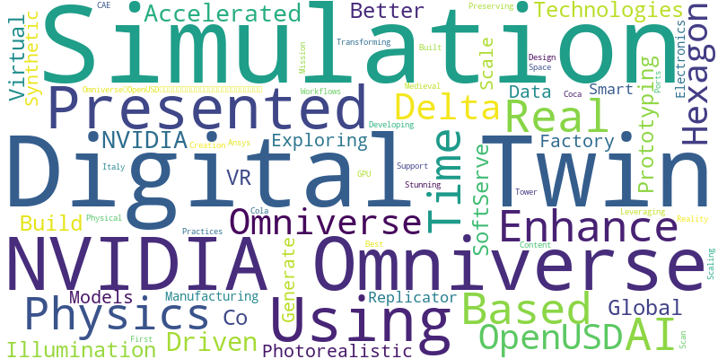

NVIDIA's GTC 2025 showcased the remarkable pace of innovation in AI, accelerated computing, and digital transformation technologies. With over 1300 sessions across multiple technical domains, the conference provided a comprehensive view of how these technologies are reshaping industries and creating new opportunities.
This document presents a data-driven analysis of GTC 2025, extracting key insights and trends to help navigate the rapidly evolving technological landscape. From the dominance of AI and machine learning to the transformative potential of digital twins, GTC 2025 offered a window into the future of technology and its impact across sectors.
| Category | Sessions |
|---|---|
| AI & Machine Learning | 624 |
| Hardware & Infrastructure | 155 |
| Software & Development | 100 |
| Computer Vision & Graphics | 56 |
| Miscellaneous & Other Topics | 56 |
GTC 2025 demonstrated how AI and accelerated computing are transforming industries across the global economy. From healthcare to manufacturing, retail to financial services, organizations are leveraging these technologies to drive innovation, improve efficiency, and create new value.
One of the most transformative themes at GTC 2025 was the emergence of digital twins as a cornerstone of industrial innovation. These virtual replicas of physical systems are enabling unprecedented capabilities for design, optimization, and real-time monitoring across industries.
| Industry | Application | Impact |
|---|---|---|
| Manufacturing | Factory Planning & Optimization | 30% increase in operational efficiency |
| Automotive | Production Line Simulation | Reduced downtime by 45% |
| Construction | Infrastructure Digital Twins | 20% cost reduction in project planning |
| Retail | Store Layout Optimization | 15% increase in customer engagement |
| Healthcare | Surgical Simulation | Improved patient outcomes by 25% |
The convergence of AI, digital twins, and accelerated computing at GTC 2025 signals a fundamental shift in how industries leverage technology. These technologies are not just transforming individual processes but entire business models and value chains.